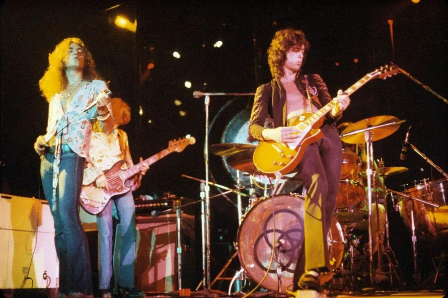

Heavy metal, a genre of rock music that includes a group of related styles that are intense, virtuosic, and powerful. Driven by the aggressive sounds of the distorted electric guitar, heavy metal is arguably the most commercially successful genre of rock music. Although the origin of the term heavy metal is widely attributed to novelist William Burroughs, its use actually dates well back into the 19th century, when it referred to cannon or to power more generally. It also has been used to classify certain elements or compounds, as in the phrase heavy metal poisoning. Heavy metal appeared in the lyrics of Steppenwolf’s “Born to be Wild” (1968), and by the early 1970s rock critics were using it to refer to a specific style of music. Mid-1960s British bands such as Cream, the Yardbirds, and the Jeff Beck Group, along with Jimi Hendrix, are generally credited with developing the heavier drums, bass, and distorted guitar sounds that differentiate heavy metal from other blues-based rock. The new sound was codified in the 1970s by Led Zeppelin, Deep Purple, and Black Sabbath with the release of Led Zeppelin II, Deep Purple in Rock, and Paranoid, respectively, which featured heavy riffs, distorted “power chords,” mystical lyrics, guitar and drum solos, and vocal styles that ranged from the wails of Zeppelin’s Robert Plant to the whines of Sabbath’s Ozzy Osbourne.
Led Zeppelin
By developing increasingly elaborate stage shows and touring incessantly throughout the 1970s to make up for their lack of radio airplay, bands such as Kiss, AC/DC, Aerosmith, Judas Priest, and Alice Cooper established an international fan base. Heavy metal’s popularity slumped during the disco years at the end of the 1970s, but it became more successful than ever in the 1980s as Def Leppard, Iron Maiden, and Saxon headed the “new wave of British heavy metal” that, along with the impact of Eddie Van Halen’s astonishing guitar virtuosity, revived the genre.
Iron Maiden
A wave of “glam” metal, featuring gender-bending bands such as Mötley Crüe and Ratt, emanated from Los Angeles beginning about 1983; Poison, Guns N’ Roses, and hundreds of other bands then moved to Los Angeles in hopes of getting record deals. But heavy metal had become a worldwide phenomenon in both fandom and production with the success of Germany’s Scorpions and other bands from Japan to Scandinavia. The most important musical influence of the decade was the adaptation of chord progressions, figuration, and ideals of virtuosity from Baroque models, especially Bach and Vivaldi, to heavy metal. Like Van Halen, guitarists such as Ritchie Blackmore (of Deep Purple), Randy Rhoads (with Osbourne), and Yngwie Malmsteen demonstrated new levels and styles of rock guitar technique, exploding popular stereotypes of heavy metal as monolithic and musically simple. Heavy metal fragmented into subgenres (such as lite metal, death metal, and even Christian metal) in the 1980s. A smaller underground scene of harder styles developed in opposition to the more pop-oriented metal of Bon Jovi, Whitesnake, and the glam bands. Metallica, Megadeth, Anthrax, and Slayer pioneered thrash metal, distinguished by its fast tempos, harsh vocal and guitar timbres, aggressiveness, and critical or sarcastic lyrics. The more broadly popular styles of heavy metal virtually took over the mainstream of popular music in the late 1980s, but the coherence of the genre collapsed around the turn of the decade; bands such as Guns N’ Roses and Nirvana pulled fans in different directions, and many fans also defected to rap music. Through the 1990s, many stars of previous decades, such as Van Halen, Metallica, and Osbourne, experienced continued success alongside newer groups such as Soundgarden, but the name heavy metal was less often used to market these groups or to define their fan community. Heavy metal musicians and fans came under severe criticism in the 1980s. Political and academic groups sprang up to blame the genre and its fans for causing everything from crime and violence to despondency and suicide. But defenders of the music pointed out that there was no evidence that heavy metal’s exploration of madness and horror caused, rather than articulated, these social ills. The genre’s lyrics and imagery have long addressed a wide range of topics, and its music has always been more varied and virtuosic than critics like to admit.